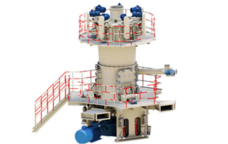

Research and Application of LUM Ultrafine Vertical Mill Roller
2015-03-20
LUM ultrafine vertical roller mill technology is widely used in the pre-grinding steel and nonferrous metal enrichment, with energy savings, increase capacity obvious advantages.
With the practice implementation of the National Energy Policy of the series, roller presses the cement industry, especially the minefields are widely used. Press grinding system cylinders based on the use of the layer of material to the press rolls of the grinding technology and carrier collection broken, sizing, drying in a separator, and the bead mill can be used with or as a system composed of a variety of processes, such as the pre-milling, grinding the mixture, grinding in semi and finish grinding systems. Due to changes in the grinding mechanism, SBM press grinding rollers and the technology of the system enables the system to reduce the power consumption of 20 to 50%, increasing from 30 to 70% of production.
In the field of mining, roller presses replace crusher c Is mainly applied to crush or replace broken applied to the rough mill. Because of the high-tech mine roller press, requires companies with strong R &D and independent innovation.
Vertical roller mill structure consists mainly of the following: . Two horizontally disposed and facing the means rotating compression rolls synchronous extrusion of the composition in 4, wherein a roller is attached, the other by the hydraulic pressure in the hydraulic system 6 disposed around the cylinder roller promoting activities for small movements, two clamping roller sets and the roller assembly, comprising the bearing system, mounted on the frame structure composed of frame 3 by the guide means, respectively, each pressure roller has its own The same independent speed transmission structure, and by universal couplings, or safety couplings fluid clutches and planetary gear of a transfer energy to the rollers, the material through the adjustable feeder between two rollers. Central automatic lubrication system provides grease to each bearing system equipment. control section The vertical mill is mainly based on the signal detection system provided by a control system automated for monitoring, control The can be divided into the machine c aside from the stage, in cons The three control modes it.
Vertical roller mill has many grinding features, as follows:
1. Has low power consumption, high production efficiency due to take full advantage of high work pressure laminated mill grinding mechanism, its high energy efficiency, ultra characteristics grinding with conventional extrusion mill and mill the report machine crushing and grinding probability greatly improved, mainly indirect contacts particle effects are numerous and strong.
2. Can handle the high moisture content of the material crushing or grinding conventional method crushed material wet material must first be dried or wet. The drying process is energy intensive, and wet grinding the required product precipitation and filtration. But for high pressure mill, the roll material preferably contains water (less than 10%), not only can form a roll even better fabric cushion, but also to improve the life of the pressure roller. Currently used carbide surface wear of roller column nails only a very small, but the life of the roller surface to 7000 ~ 20000h.
3. Improve subsequent year Product jobs and recovery of materials in vertical inside the particles and the particle population at the interface between the mineral and waste rock generated values around from local pressure, the particles of each component of the ability to withstand these stresses and decided it was just crushed or kinked. In dealing with diamond, diamond-hard rock minerals to resist these stresses around was crushed. In dealing with some broken gold and the fundamental integrity or minerals or produce little deformation. For metal sulphide ore or ore, because of the nature of the mineral composition of the differences occur along the interface of the crushed minerals solution improves degrees. Surface working exudative particles and particles of internal cracks and fissures are exudates can penetrate, thus improving the quality of the product and the recovery of valuable minerals.
4. Small footprint, high pressure mill investment province construction due to a compact light weight, small size, location of small footprint installation. Due to the grinding effect occurs mainly mutual compression between two rollers, squeeze resulting framework advocated bears rely on the basis of the load is low, compared to the plant and other equipment, can save a lot investment in infrastructure.
5. Good production environment can be seen from the high-pressure roller mill work, due to the use of a laminate grinding mechanism, the material is enclosed in a confined space and the unit supply roll, broken by the static pressure, and generally produces no significant impact splash Therefore, equipment vibration and low noise, improve early 1990s, workers working on the grinder ring high pressure roller 4 applications century, the industrialized countries of the world, such as Germany, the United States, Brazil, Russia and other countries in the mineral processing industry research and application of vertical mill rollers, it has been used successfully with high pressure diamond mill dissociation ore beneficiation precious metals, ore beneficiation base metal and the preparation of feed pellets and other projects, and has achieved remarkable economic and social benefits. Experts and domestic milling companies are also following the trend, pioneered the use of advanced grinding technology. Some Iron and Steel Mining Company and Liuzhou Iron and Steel Mining Company ore pellet plant were imported from Germany, the different specifications of the high pressure mill for feeding pellets to produce grinding iron ore, replacing recent developments in the domestic sphere Mission mill feed operations using the grinding Run method. In the introduction to the German press roll manufacturing technology based on a combination of independent development of hundreds of roller presses in the use of cement, through a property press platform and test materials rollers analytical laboratories for a variety of roll materials testing and analysis of grinding, according to the characteristics of iron ore pellets, the development of the national metallurgical industry, high pressure mill. By using the system in some steel balls, the use of effects and relatively wet mill, vertical roller mill used in the feed pellet iron ore grinding process production systems in terms of production efficiency, product quality, economic efficiency and social point of view, should be far superior to the use of the plant-term future in the field of mineral processing industry, vertical mill to replace Mill Run is the trend.
Nearly ten thousand interior metal mining, metallurgical companies milling ore roller press is a period of time in the future sales of priority needs, vertical roller mill in mining areas will be more widely applied. Roll press of the power consumption, improving the efficiency and the obvious advantages so that the traditional production process. Compared with the traditional crusher, roller press can save 20% -50% energy saving effect is obvious; increase the production of 30% to 70%, to improve the efficiency of the production system; you can save construction investment, facilitate the transformation of the original grinding system, to facilitate the development of large-scale management of the company. With the development of mineral resources and improve productivity in 2011 and 2015, the iron ore and non-ferrous metals industry demand increased roller press will reach 10 billion yuan -280 000 000 000 scale enrichment industry demand technological transformation about 5 billion yuan.
 SBM has three factories, the gross area is about 2.3 million square meters.
SBM has three factories, the gross area is about 2.3 million square meters.